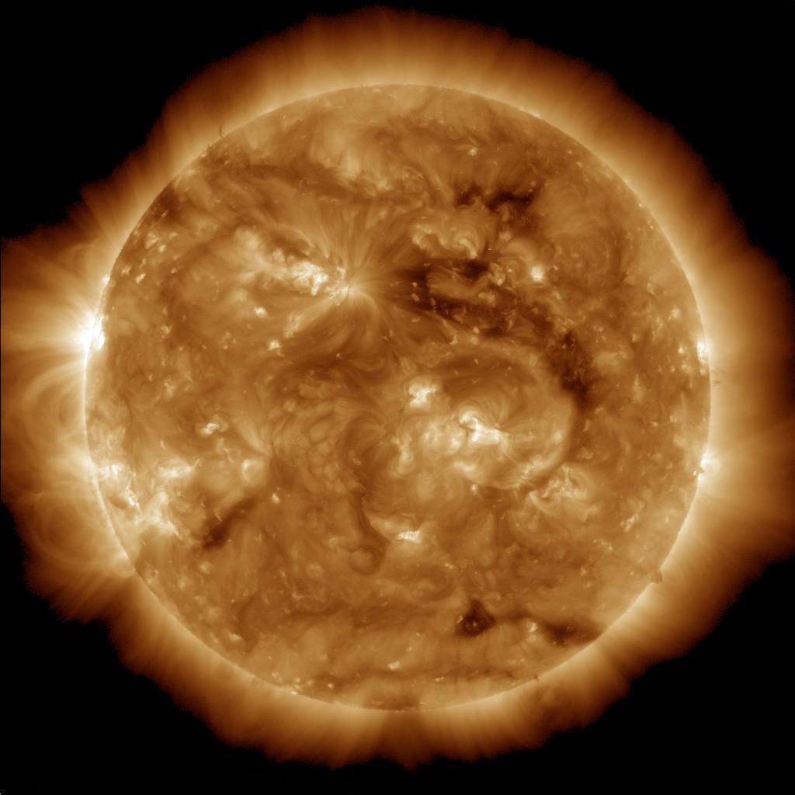

Fun Facts about the Sun
- The Sun is a 4.5 billion-year-old yellow dwarf star-a hot glowing ball of hydrogen and helium`
- The Sun has several regions. The interior regions include the core, the radiative zone, and the convection zone. Next is the visible surface also known as photosphere, then the chromosphere, followed by the transition zone, and then the corona
- The sun orbits the center of the Milky Way about every 230 million Earth years, brining the planets, asteroids, comets, and other objects with it.

WHy is the Sun important?
The Sun provides the light, heat, and gravitational force needed to support life and stabilize our solar sytem.